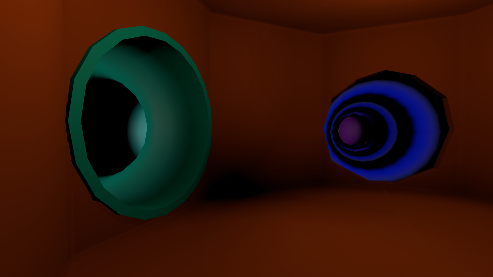
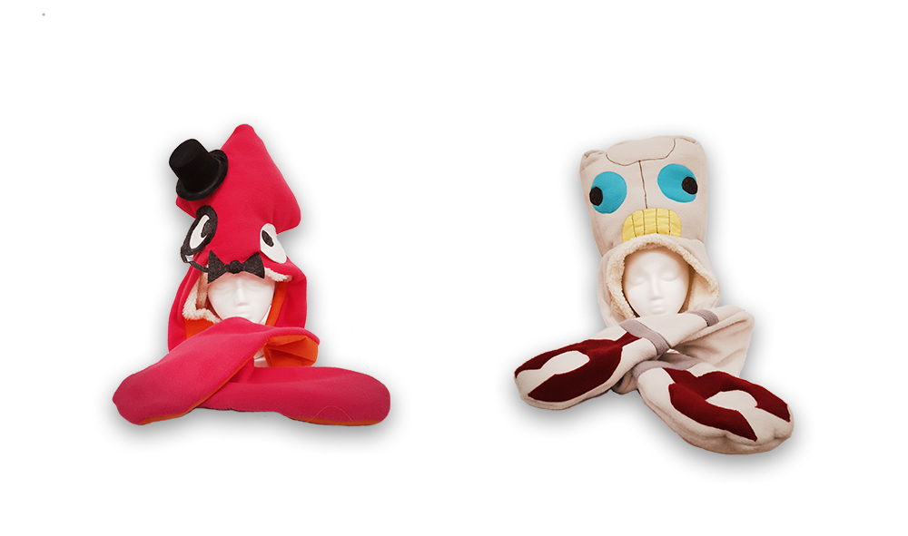

I'm Joni (they/them pronouns), a software engineer and game designer living in upstate New York. Currently working at Akupara Games. 2015 Game Design graduate from Rochester Institute of Technology.
Playmaze Panic (2021 Game Jam Project)

A 3D First Person horror prototype where you navigate a fast food playground while evading a monster. Developed as part of an internal 2020 game jam at Akupara Games, I pitched the concept and was team lead/designer. The game was built over the course of two weeks with a team, with some additional time spent preparing for release on itch.io and GameJolt.
Further info about the development of the game can be found in the blog post or the podcast.
FlyInside (2018 Shipped Title)
A VR-focused realistic flight simulator. Worked as a generalist C++ programmer at the studio from 2017-2019. Role was mostly adding new features to the sim, and later improving environment generation closer to early-access launch on Steam in 2018.
Slap Friends (2016-2017 Festival Winner)

{kind=link}
A 2-player fighting game where players slap each other with cartoon characters. Players control the game by wearing physical costumes with accelerometers tracking movements, allowing actual slap fights with the costumes. I built the game in Unity, and used Arduino for controller software and hardware. Concept, art, and costume creation was by Terence Tolman.
Slap Friends was featured at Alt.Ctrl.GDC 2016, GDC Experimental Gameplay Workshop 2016, and Indiecade 2017.
Star Words (Personal Project)

A Star Fox inspired space shooter where players are under attack from the opening title crawl of the story, and have to fight their way through a very meta experience. Currently in development as a solo project.